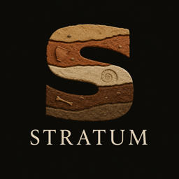

The honest story of how Lithos grew a whole archaeology site — dinosaur bones, mummies, ancient tools, dig games, and real photos from museums around the world. No gemstones here. Just deep time. 🏛️
What Stratum looks like when you count every find in the catalog.
How Stratum went from "I want archaeology too" to a real site with bones, fossils, and games.
I built Lithos as a gem company — thousands of minerals, games, classes, the whole thing. But I also love archaeology. Bones. Fossils. Mummies. Ancient cities buried in sand.
The idea: an archaeology version of Lithos. Same kind of catalog, same games hub feeling — but every entry is a real artifact from human history instead of a gemstone.
First step inside Lithos: a dig-site hub with six places to explore — Sunrise Valley, Temple of Obsidian, Painted Cave, Harbor Wreck, Sand Tomb, and Hill Fort. Plus mini-games to practice digging.
Not just a section — a whole themed site at /stratum/. Sand and terracotta colors. "Artifact Catalog" instead of gemstones. "Ask the Archaeologist" instead of the gem teacher. Same features, different world.
I wrote a whole new catalog: T. rex femurs, Neanderthal skulls, Roman gladii, Egyptian canopic jars, Aztec sun stones, Ötzi the Iceman, the Piltdown hoax (as a cautionary tale!), and dozens more — each with period, material, and excavation notes.
Artifacts deserve real pictures — not placeholders. I built scripts to fetch museum-quality photos for the catalog. When a photo was wrong (like FIND #55, the Aboriginal grinding stone), we fixed it and busted the cache so the live site showed the right image.
The big field game: brush, pickaxe, and scanner — excavate pottery, coins, bones, and golden idols layer by layer. Wired into Stratum's Dig Games hub so you can play without leaving the site.
Trowel Dig (grid excavation before energy runs out), Artifact Memory (match pottery and bones), Layer Stack (put geological layers in order — oldest at the bottom), plus the scavenger hunt and Identify a Find tools from Lithos, relabeled for the field.
Stratum reuses Lithos's site engine — catalog, field school, memberships, crafts, donations — but stratum-site.js rewrites every label, hero, and filter so it feels like archaeology, not geology.
Every new artifact, game, and museum partnership becomes another layer in the story. Stratum is still growing — just like a real excavation.
Building a second whole site inside your first site is not as simple as flipping a switch.
At first Stratum still showed gemstones with archaeology labels pasted on. That felt wrong. The fix: a whole separate stratum-data.js catalog with only bones, fossils, tools, pottery, and monuments.
One find had the wrong picture live on the site — embarrassing for a catalog that's supposed to teach real archaeology. Cache busting and careful photo checks became part of every deploy.
"Gem of the Week" → "Find of the Week." "Mineral class" → "Material class." "Night Shift at the Gem Factory" still exists but the nav says "Dig Games." Hundreds of labels needed swapping.
Stratum lives at ?site=stratum and /stratum/ — same HTML file, different mode. Getting session storage, URLs, and branding to switch cleanly took careful JavaScript.
GitHub Pages takes time to update. Sometimes the live site showed an old version until hard refresh. Version bumps (v=50, deploy-50) help — but patience is part of publishing.
Every artifact description needs real dates, real places, real science. One wrong fact in a kid-facing catalog is one too many — so descriptions were written carefully, with hoaxes labeled as hoaxes.
The moments that made every layer worth digging through.
From 3.2-million-year-old Lucy to Pompeii bread carbonized in AD 79 — eighty-five entries that span almost all of human (and dinosaur!) history.
Excavating layer by layer — brush gently, pick carefully, scan for treasure. A game that actually feels like archaeology.
Lithos for gems. Stratum for bones and antiquity. Switch with one link. Same builder, two worlds.
Museum specimens, fossils, pottery — the catalog looks like a field notebook with actual evidence, not cartoon placeholders.
Paper mummy wraps, fossil clay imprints, sandbox dig sites, cave wall painting — lab crafts relabeled for young archaeologists.
Find every artifact hidden in the scavenger hunt and earn a field archaeologist certificate. Collect them all!
What I learned building Stratum on top of Lithos.
Stratum is live — but the excavation never really ends.